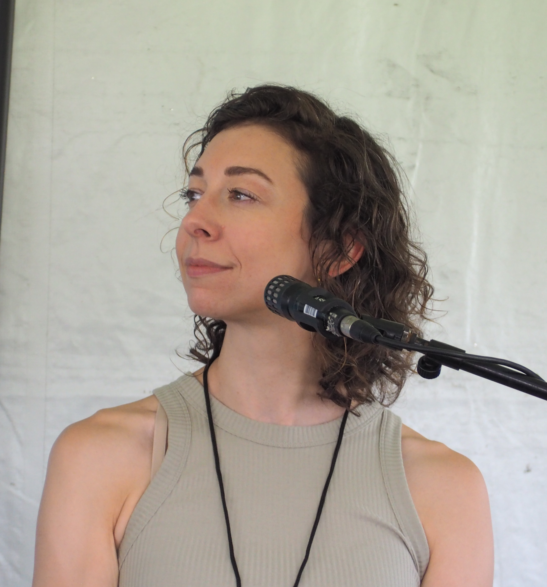
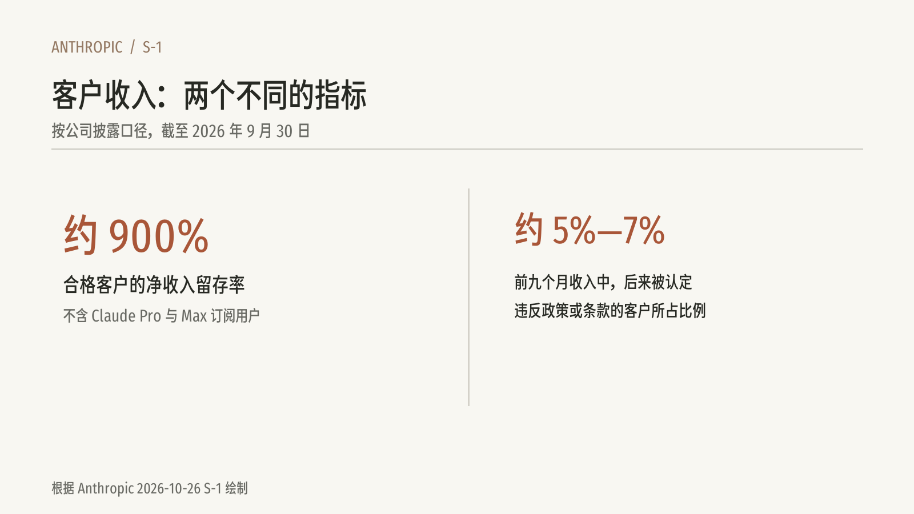
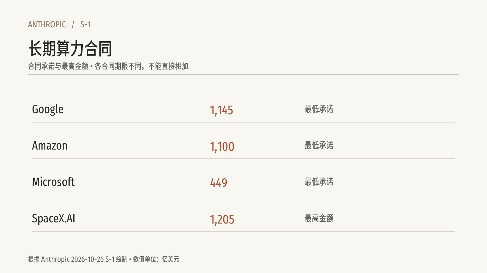
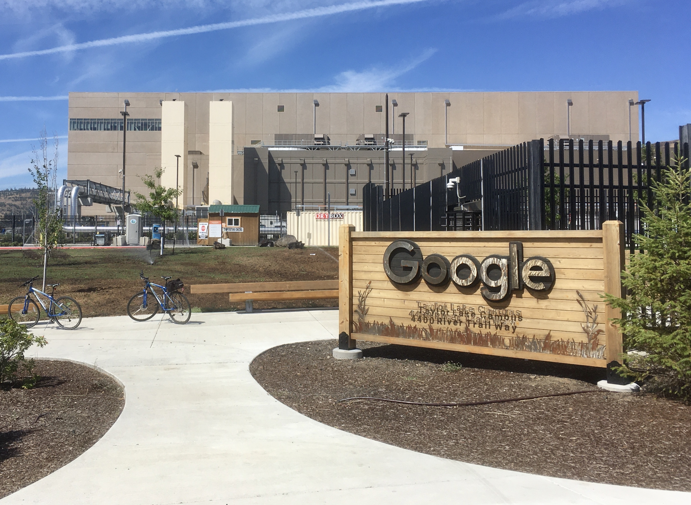
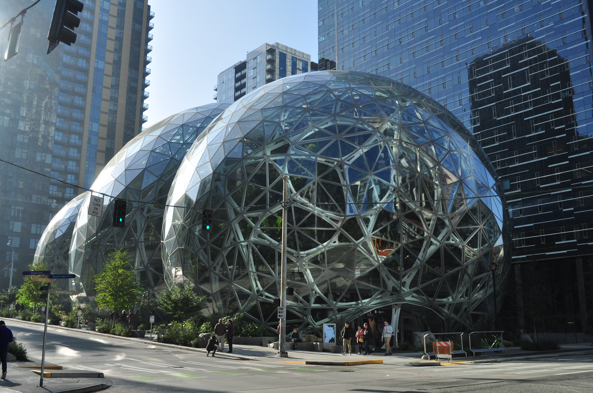
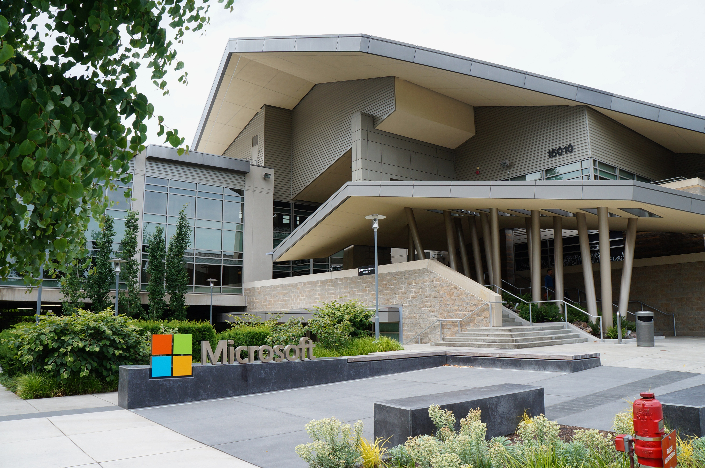
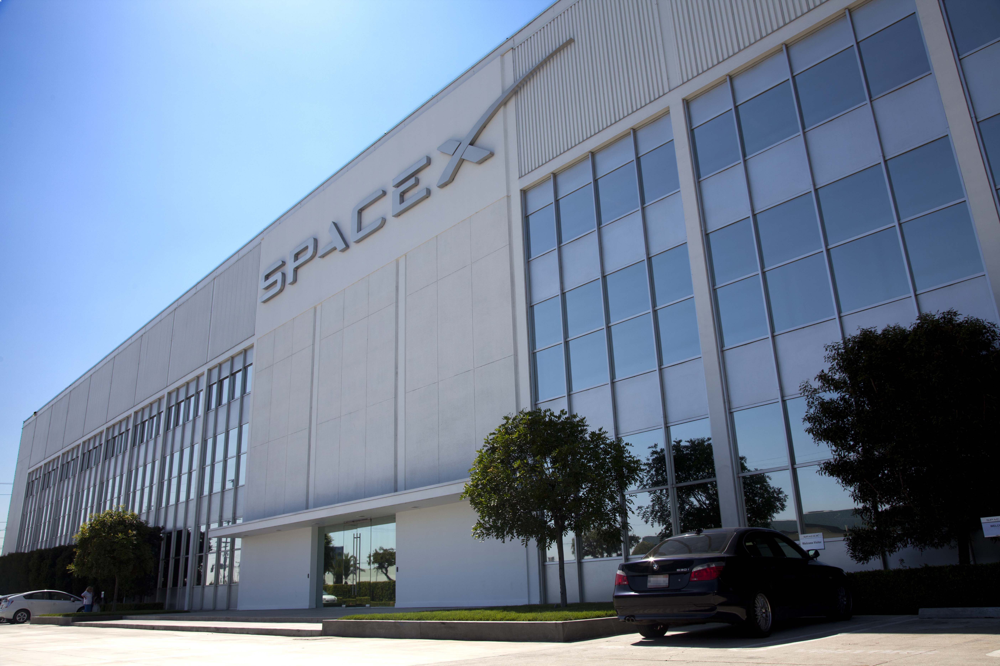

2024 年至 2026 年 7 月 · 事实陈述 · 已核阅指定范围
Bartz 案：训练和数据来源是不同问题

Andrea Bartz 在书展 · Andrea Bartz 在 2023 年 Gaithersburg Book Festival 的活动照片。
创作：2023 年 5 月；事件：2026 年 10 月 26 日；Frypie。
保留下载原图，未重新裁切；证据边界：拍摄于诉讼之前，用于辨认人物。
核阅：来源、身份、日期及标明的使用条件已核对。
图片出处 · CC BY-SA 4.0《The Herd》封面 · 《The Herd》是 Andrea Bartz 的作品之一；封面来自作者官网媒体资料。
创作：2020 年；事件：2026 年 10 月 26 日；封面版权归相关权利人；作者 Andrea Bartz。
原样使用作者官网提供的封面文件；证据边界：仅用于介绍作者作品，不据此断言该具体书名属于诉讼和解名单。
核阅：来源、身份、日期及标明的使用条件已核对。
图片出处 · 作者官网提供媒体封面；本地解释使用，后续公开和离线分发范围待核2024 年，Andrea Bartz 等作者就作品用于 AI 训练提起诉讼。2026 年 7 月，法院最终批准 15 亿美元集体和解；美联社称该和解覆盖超过 48.2 万本书。
Andrea Bartz 是美国小说家，《The Herd》是她的作品之一。她与其他作者共同提出诉讼，代表一批著作权人寻求救济。
该案中，法院曾区分训练用途与从盗版来源取得和保存书籍的问题。和解是双方达成、经法院批准的解决方式，不应简单说成法院罚款。每本约 3,000 美元是总体安排中的近似数，实际权利人所得还受费用和分配规则影响。这一案件也不能代表所有 AI 版权争议的最终答案。
[pdf] [apbartz]
截至 2026 年 9 月 · 事实陈述 · 已核阅指定范围
客户增长与政策执行
Claude 标识 · 用于识别 Claude；相关商标属于各自权利人。
创作：2024 年；事件：2026 年 10 月 26 日；Anthropic。
使用 Commons 收录的 PNG 或 SVG 转换预览；证据边界：作为品牌识别，不表示公司参与或认可本作品。
核阅：来源、身份、日期及标明的使用条件已核对。
图片出处 · Commons 标注文字标识；商标权另计
客户指标 · 按公司披露口径展示净收入留存率与违规使用收入估计。
创作：2026 年 10 月 27 日；事件：2026 年 10 月 26 日；本作品依 S-1 自制说明图。
据 S-1 的数值和说明重新绘制；证据边界：作者设计的说明图，不是原始文件图像。
核阅：来源、身份、日期及标明的使用条件已核对。
图片出处 · 本作品自制图版；数据引自 S-1截至 2026 年 9 月 30 日，Anthropic 披露的净收入留存率约为 900%。公司以一年前三个月内至少产生 1 美元收入的合格客户为基础，比较这批客户在最近三个月的收入；固定价格的 Claude Pro 和 Max 订阅用户不计入这一指标。
公司估计，2026 年前九个月约 5% 至 7% 的收入来自后来被识别为违反使用政策或商业条款的客户。识别、调查和执行需要时间，公司在服务提供时确认收入。它在 8 月和 9 月加强识别与执行，预计这一比例未来下降，但对收入的影响存在不确定性。
[sec]
2026 年及其后 · 事实陈述 · 已核阅指定范围
长期算力合同：为增长预留资源

长期算力合同 · 四家基础设施供应商的承诺或上限，单位亿美元。
创作：2026 年 10 月 27 日；事件：2026 年 10 月 26 日；本作品依公开 S-1 自制图表。
根据 S-1 数值与口径重新绘制；非原始财务报表截图；证据边界：Infrastructure Service Arrangements，PDF 第 181—182 页
核阅：已对照 S-1 数值、单位及期间。
图片出处 · 本作品自制图表；底层数据引自 S-1
Google 数据中心 · Google 的 The Dalles 数据中心外观。Google 是文中讨论的基础设施供应商之一。
创作：2020 年 6 月 23 日；事件：2026 年 10 月 26 日；Lambtron。
使用 Commons 原图；证据边界：不代表该具体设施用于 Anthropic 合同。
核阅：来源、身份、日期及标明的使用条件已核对。
图片出处 · CC BY-SA 4.0Google 标识 · 用于识别 Google；相关商标属于各自权利人。
创作：2026 年；事件：2026 年 10 月 26 日；Google LLC。
使用 Commons 收录的 PNG 或 SVG 转换预览；证据边界：作为品牌识别，不表示公司参与或认可本作品。
核阅：来源、身份、日期及标明的使用条件已核对。
图片出处 · Commons 标注文字标识；商标权另计
Amazon Spheres · Amazon 西雅图总部园区的 Spheres，摄于 2018 年。
创作：2018 年 10 月 21 日；事件：2026 年 10 月 26 日；Joe Mabel。
使用 Commons 原图；证据边界：公司办公园区，并非本次算力合同设施。
核阅：来源、身份、日期及标明的使用条件已核对。
图片出处 · CC BY-SA 4.0Amazon 标识 · Amazon 公司标识，用于识别供应商。
创作：2024 年；事件：2026 年 10 月 26 日；Amazon.com, Inc.、Koto 和 NaN。
使用 Commons SVG 渲染的 PNG 预览；证据边界：用于识别，不代表公司认可本作品。
核阅：见材料记录
图片出处 · Commons 标注文字标识；商标权另计 Amazon Web Services 标识 · 用于识别 Amazon Web Services；相关商标属于各自权利人。
Amazon Web Services 标识 · 用于识别 Amazon Web Services；相关商标属于各自权利人。
创作：2017 年；事件：2026 年 10 月 26 日；Amazon Web Services。
使用 Commons 收录的 PNG 或 SVG 转换预览；证据边界：作为品牌识别，不表示公司参与或认可本作品。
核阅：来源、身份、日期及标明的使用条件已核对。
图片出处 · Apache 2.0；商标权另计
Microsoft Redmond 园区 · 微软 Redmond 园区 92 号楼，摄于 2015 年。
创作：2015 年 6 月 18 日；事件：2026 年 10 月 26 日；Jiaqian AirplaneFan。
使用 Commons 原图；证据边界：公司园区，并非本次算力合同设施。
核阅：来源、身份、日期及标明的使用条件已核对。
图片出处 · CC BY 3.0Microsoft 标识 · 用于识别 Microsoft；相关商标属于各自权利人。
创作：2012 年标识；事件：2026 年 10 月 26 日；Microsoft。
使用 Commons 收录的 PNG 或 SVG 转换预览；证据边界：作为品牌识别，不表示公司参与或认可本作品。
核阅：来源、身份、日期及标明的使用条件已核对。
图片出处 · Commons 标注文字标识；商标权另计
SpaceX Hawthorne 设施 · SpaceX 的 Hawthorne 设施，摄于 2012 年；S-1 所列供应商 SpaceX.AI 是其子公司。
创作：2012 年 9 月 28 日；事件：2026 年 10 月 26 日；SpaceX。
使用 Commons 原图；证据边界：并非 S-1 合同所指数据中心。
核阅：来源、身份、日期及标明的使用条件已核对。
图片出处 · CC0 1.0SpaceX 标识 · 用于识别 SpaceX；相关商标属于各自权利人。
创作：2014 年；事件：2026 年 10 月 26 日；SpaceX。
使用 Commons 收录的 PNG 或 SVG 转换预览；证据边界：作为品牌识别，不表示公司参与或认可本作品。
核阅：来源、身份、日期及标明的使用条件已核对。
图片出处 · Commons 标注文字标识；商标权另计为了训练和运行模型，Anthropic 与多家供应商签订长期基础设施协议。S-1 披露：与 Google 的最低支出承诺约 1,145 亿美元，覆盖 2026 年 4 月至 2033 年 7 月；与 Amazon 的最低承诺为 1,100 亿美元，覆盖 2026 年 5 月至 2036 年 4 月；与 Microsoft 的最低承诺为 449 亿美元，覆盖 2026 年 11 月至 2033 年 5 月。
公司预计，还承诺从包括 Google 在内的供应商采购额外 TPU 资源，支付规模约 1,250 亿至 1,500 亿美元，取决于资源交付和合同条件。几项最低承诺包含实际使用不足时仍须支付的条款，具体例外依合同而定。
与 SpaceX.AI 的多份合同上限合计 1,205 亿美元，全部算力交付后合计约每月 31 亿美元；初始不可取消期间结束后，任一方可提前 90 天通知取消。合同的最低承诺、上限和估计值有不同条件，也覆盖不同年份。它们既为增长预留资源，也让现金流与未来需求紧密相连。
[sec]